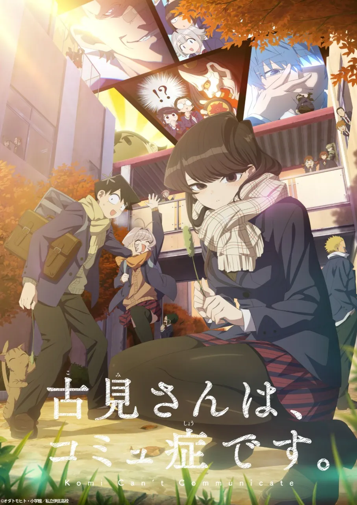

古見同學有交流障礙症
故事簡介:
古見硝子是超級美少女，站著就是藝術，坐著就是絕讚，走三步就有人告白，可是有交流障礙症。入學第一天，古見硝子遇上只野仁人。只野得知硝子有交流障礙症，自願協助她交到100位朋友。在高升學率卻怪人雲集的私立伊旦高校中，只野與古見漸漸努力朝目標邁進。
角色介紹
- 古見硝子
- 本作女主角。容貌出色，品學兼優，運動神經出眾，料理技術純熟，喜歡貓
- 患有交流障礙症而不敢與人說話。高一與男主第一次溝通是在黑板上，漸對只野產生情愫
- 之後與人交流便都用筆談，希望交到100個朋友。漸漸地能與人講少量的話，在高二與萬場木成為朋友

- 高二情人節鼓起勇氣當面送出巧克力，也收到只野的告白，兩人開始交往
- 只野仁人
- 因與古見要好，因此被同學們視為眼中釘。知道她有交流障礙症，自願幫她交到100位朋友
- 很體貼細心，擅長觀察他人想法，不斷提高硝子對他的好感度
- 高二情人節收到硝子的巧克力後向她告白，兩人開始交往
- 升上三年級後為了能配得上硝子開始奮發圖強用功讀書
- 長名馴染
- 跟人自來熟，總是跟人說上兩三分鐘的話就成為朋友，而且一輩子都不會忘記對方
- 是只野國中的同班同學。只野評其為「性別不明、經常說謊、言行不一致」
- 萬場木留美子
- 辣妹，高二與只野和古見同班，在卸掉了駭異的妝容後順利與硝子成為朋友
- 因只野的貼心漸對他心生情愫，一經只野稱讚就會害羞地回罵。
- 情人節向只野告白，知曉只野對硝子的情意，便鼓勵他與硝子在一起，三人關係不變
感想:
看見古見能從完全不敢與他人對視和講不出話，一路到交了許多朋友以及能說話，打從心底為她開心。我很喜歡她與只野的互動，還有和學校裡許多很有個性的人來往的情節~